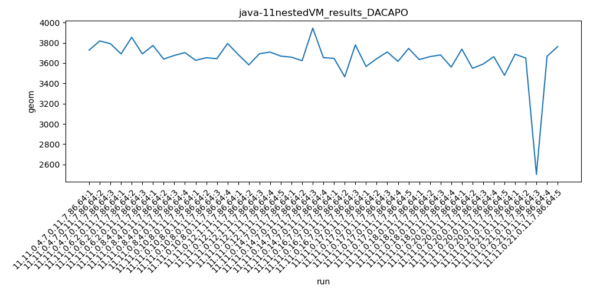

java-11 DACAPO
Context at bottom
/home/jvanek/git/benchmarks-in-nested-virtualisation-toolchain/final_results/nestedVM_results/nestedVM_results_J2DBENCH
java-11
DACAPO
/home/jvanek/git/benchmarks-in-nested-virtualisation-toolchain/final_results/nestedVM_results/nestedVM_results_RADARGUNs3
java-11
DACAPO
/home/jvanek/git/benchmarks-in-nested-virtualisation-toolchain/final_results/nestedVM_results/nestedVM_results_DACAPO
java-11
DACAPO
nestedVM_results_DACAPO
final score
Expected number of java-11 JDKs: 11
1st avgmed_alljdks_metric:
/home/jvanek/git/benchmarks-in-nested-virtualisation-toolchain/final_results/result_processing.py /home/jvanek/git/benchmarks-in-nested-virtualisation-toolchain/final_results/nestedVM_results/nestedVM_results_DACAPO geom False
values: [3728, 3819, 3792, 3691, 3855, 3691, 3774, 3640, 3676, 3704, 3628, 3653, 3644, 3794, 3685, 3583, 3693, 3709, 3669, 3659, 3624, 3945, 3654, 3647, 3465, 3780, 3567, 3644, 3710, 3617, 3745, 3635, 3664, 3681, 3561, 3738, 3549, 3591, 3664, 3480, 3688, 3650, 2502, 3668, 3763]

Expected number of iterations: 5
final number of values: 45 out of 55
Pass rate: 81.8%
values: (2502, 3945, 3651.5333333333333, 3668)

** accuracy from all jdks and runs
more is better
MIN: 2502
MAX: 3945
AVG: 3651.5333333333333
MED: 3668
Relative differences 1:
MIN-MAX: 37.0 %
MIN-AVG: 31.0 %
MIN-MED: 32.0 %
MAX-MIN: -58.0 %
MAX-AVG: -8.0 %
MAX-MED: -8.0 %
AVG-MED: 0.0 %
stored to java-11.properties. sort | uniq that!
2nd avgmed_by_jdk_metric:
values: [3779.6666666666665, 3745.6666666666665, 3698.5, 3679.75, 3667.8, 3720.5, 3630.6666666666665, 3656.6, 3635.25, 3604.4, 3454.2]

values: [3792, 3691, 3704, 3653, 3685, 3659, 3647, 3644, 3664, 3591, 3668]

values: (3454.2, 3779.6666666666665, 3661.181818181818, 3667.8)
values: (3591, 3792, 3672.5454545454545, 3664)

** accuracy from all jdks where runs were avged
more is better
MIN: 3454.2
MAX: 3779.6666666666665
AVG: 3661.181818181818
MED: 3667.8
Relative differences 1:
MIN-MAX: 9.0 %
MIN-AVG: 6.0 %
MIN-MED: 6.0 %
MAX-MIN: -9.0 %
MAX-AVG: -3.0 %
MAX-MED: -3.0 %
AVG-MED: 0.0 %
stored to java-11.properties. sort | uniq that!
** accuracy from all jdks where runs were medianed
more is better
MIN: 3591
MAX: 3792
AVG: 3672.5454545454545
MED: 3664
Relative differences 1:
MIN-MAX: 5.0 %
MIN-AVG: 2.0 %
MIN-MED: 2.0 %
MAX-MIN: -6.0 %
MAX-AVG: -3.0 %
MAX-MED: -3.0 %
AVG-MED: -0.0 %
stored to java-11.properties. sort | uniq that!
/home/jvanek/git/benchmarks-in-nested-virtualisation-toolchain/final_results/nestedVM_results/nestedVM_results_JMH
java-11
DACAPO
/home/jvanek/git/benchmarks-in-nested-virtualisation-toolchain/final_results/nestedVM_results/nestedVM_results_SPECJBB
java-11
DACAPO
/home/jvanek/git/benchmarks-in-nested-virtualisation-toolchain/final_results/nestedVM_results/nestedVM_results_RADARGUNs1
java-11
DACAPO
/home/jvanek/git/benchmarks-in-nested-virtualisation-toolchain/final_results/containers_in_container_results/containers_in_container_DACAPO
java-11
DACAPO
containers_in_container_DACAPO
final score
Expected number of java-11 JDKs: 11
1st avgmed_alljdks_metric:
/home/jvanek/git/benchmarks-in-nested-virtualisation-toolchain/final_results/result_processing.py /home/jvanek/git/benchmarks-in-nested-virtualisation-toolchain/final_results/containers_in_container_results/containers_in_container_DACAPO geom False
values: [2028, 2009, 1880, 2002, 1973, 2099, 1967, 1899, 1922, 1960, 1909, 1989, 1916, 1885, 1979, 1875, 1879, 1901, 1865, 1898, 1943, 1987]

Expected number of iterations: 5
final number of values: 22 out of 55
Pass rate: 40.0%
values: (1865, 2099, 1943.8636363636363, 1943)

** accuracy from all jdks and runs
more is better
MIN: 1865
MAX: 2099
AVG: 1943.8636363636363
MED: 1943
Relative differences 1:
MIN-MAX: 11.0 %
MIN-AVG: 4.0 %
MIN-MED: 4.0 %
MAX-MIN: -13.0 %
MAX-AVG: -8.0 %
MAX-MED: -8.0 %
AVG-MED: -0.0 %
stored to java-11.properties. sort | uniq that!
2nd avgmed_by_jdk_metric:
values: [1972.3333333333333, 2024.6666666666667, 1929.3333333333333, 1960.0, 1909.0, 1952.5, 1932.0, 1875.0, 1890.0, 1881.5, 1965.0]
values: [2009, 2002, 1922, 1960, 1909, 1989, 1979, 1875, 1901, 1898, 1987]

values: (1875.0, 2024.6666666666667, 1935.5757575757575, 1932.0)
values: (1875, 2009, 1948.2727272727273, 1960)

** accuracy from all jdks where runs were avged
more is better
MIN: 1875.0
MAX: 2024.6666666666667
AVG: 1935.5757575757575
MED: 1932.0
Relative differences 1:
MIN-MAX: 7.0 %
MIN-AVG: 3.0 %
MIN-MED: 3.0 %
MAX-MIN: -8.0 %
MAX-AVG: -5.0 %
MAX-MED: -5.0 %
AVG-MED: -0.0 %
stored to java-11.properties. sort | uniq that!
** accuracy from all jdks where runs were medianed
more is better
MIN: 1875
MAX: 2009
AVG: 1948.2727272727273
MED: 1960
Relative differences 1:
MIN-MAX: 7.0 %
MIN-AVG: 4.0 %
MIN-MED: 4.0 %
MAX-MIN: -7.0 %
MAX-AVG: -3.0 %
MAX-MED: -2.0 %
AVG-MED: 1.0 %
stored to java-11.properties. sort | uniq that!
/home/jvanek/git/benchmarks-in-nested-virtualisation-toolchain/final_results/containers_in_container_results/containers_in_container_JMH
java-11
DACAPO
/home/jvanek/git/benchmarks-in-nested-virtualisation-toolchain/final_results/containers_in_container_results/containers_in_container_SPECJBB
java-11
DACAPO
/home/jvanek/git/benchmarks-in-nested-virtualisation-toolchain/final_results/containers_in_container_results/containers_in_container_RADARGUNs1
java-11
DACAPO
/home/jvanek/git/benchmarks-in-nested-virtualisation-toolchain/final_results/containers_in_container_results/containers_in_container_J2DBENCH
java-11
DACAPO
/home/jvanek/git/benchmarks-in-nested-virtualisation-toolchain/final_results/containers_in_container_results/containers_in_container_RADARGUNs3
java-11
DACAPO
/home/jvanek/git/benchmarks-in-nested-virtualisation-toolchain/final_results/local_results/local_results_J2DBENCH
java-11
DACAPO
/home/jvanek/git/benchmarks-in-nested-virtualisation-toolchain/final_results/local_results/local_results_SPECJBB
java-11
DACAPO
/home/jvanek/git/benchmarks-in-nested-virtualisation-toolchain/final_results/local_results/local_results_RADARGUNs1
java-11
DACAPO
/home/jvanek/git/benchmarks-in-nested-virtualisation-toolchain/final_results/local_results/local_results_RADARGUNs3
java-11
DACAPO
/home/jvanek/git/benchmarks-in-nested-virtualisation-toolchain/final_results/local_results/local_results_JMH
java-11
DACAPO
/home/jvanek/git/benchmarks-in-nested-virtualisation-toolchain/final_results/local_results/local_results_DACAPO
java-11
DACAPO
local_results_DACAPO
final score
Expected number of java-11 JDKs: 11
1st avgmed_alljdks_metric:
/home/jvanek/git/benchmarks-in-nested-virtualisation-toolchain/final_results/result_processing.py /home/jvanek/git/benchmarks-in-nested-virtualisation-toolchain/final_results/local_results/local_results_DACAPO geom False
values: [1240, 1187, 1218, 1225, 1332, 1219, 1191, 1248, 1211, 1218, 1259, 1213, 1216, 1225, 1208, 1263, 1212, 1223, 1178, 1229, 1303, 1185, 1279, 1240, 1186, 1230, 1197, 1248, 1199, 1217, 1179, 1208, 1241, 1204, 1219, 1231, 1160, 1145, 1174, 1157, 1198, 1172, 1140, 1179, 1200, 1201, 1150, 894, 831, 885, 823, 839]

Expected number of iterations: 5
final number of values: 52 out of 55
Pass rate: 94.5%
values: (823, 1332, 1177.4807692307693, 1208)

** accuracy from all jdks and runs
more is better
MIN: 823
MAX: 1332
AVG: 1177.4807692307693
MED: 1208
Relative differences 1:
MIN-MAX: 38.0 %
MIN-AVG: 30.0 %
MIN-MED: 32.0 %
MAX-MIN: -62.0 %
MAX-AVG: -13.0 %
MAX-MED: -10.0 %
AVG-MED: 3.0 %
stored to java-11.properties. sort | uniq that!
2nd avgmed_by_jdk_metric:
values: [1240.4, 1217.4, 1236.0, 1224.8, 1223.6, 1226.4, 1210.2, 1211.0, 1169.2, 1174.0, 854.4]

values: [1225, 1218, 1259, 1216, 1223, 1230, 1208, 1219, 1172, 1179, 839]

values: (854.4, 1240.4, 1180.6727272727273, 1217.4)
values: (839, 1259, 1180.7272727272727, 1218)

** accuracy from all jdks where runs were avged
more is better
MIN: 854.4
MAX: 1240.4
AVG: 1180.6727272727273
MED: 1217.4
Relative differences 1:
MIN-MAX: 31.0 %
MIN-AVG: 28.0 %
MIN-MED: 30.0 %
MAX-MIN: -45.0 %
MAX-AVG: -5.0 %
MAX-MED: -2.0 %
AVG-MED: 3.0 %
stored to java-11.properties. sort | uniq that!
** accuracy from all jdks where runs were medianed
more is better
MIN: 839
MAX: 1259
AVG: 1180.7272727272727
MED: 1218
Relative differences 1:
MIN-MAX: 33.0 %
MIN-AVG: 29.0 %
MIN-MED: 31.0 %
MAX-MIN: -50.0 %
MAX-AVG: -7.0 %
MAX-MED: -3.0 %
AVG-MED: 3.0 %
stored to java-11.properties. sort | uniq that!
/home/jvanek/git/benchmarks-in-nested-virtualisation-toolchain/final_results/containers_in_vm_results/containers_in_vm_results_JMH
java-11
DACAPO
/home/jvanek/git/benchmarks-in-nested-virtualisation-toolchain/final_results/containers_in_vm_results/containers_in_vm_results_J2DBENCH
java-11
DACAPO
/home/jvanek/git/benchmarks-in-nested-virtualisation-toolchain/final_results/containers_in_vm_results/containers_in_vm_results_RADARGUNs3
java-11
DACAPO
/home/jvanek/git/benchmarks-in-nested-virtualisation-toolchain/final_results/containers_in_vm_results/containers_in_vm_results_SPECJBB
java-11
DACAPO
/home/jvanek/git/benchmarks-in-nested-virtualisation-toolchain/final_results/containers_in_vm_results/containers_in_vm_results_RADARGUNs1
java-11
DACAPO
/home/jvanek/git/benchmarks-in-nested-virtualisation-toolchain/final_results/containers_in_vm_results/containers_in_vm_results_DACAPO
java-11
DACAPO
containers_in_vm_results_DACAPO
final score
Expected number of java-11 JDKs: 11
1st avgmed_alljdks_metric:
/home/jvanek/git/benchmarks-in-nested-virtualisation-toolchain/final_results/result_processing.py /home/jvanek/git/benchmarks-in-nested-virtualisation-toolchain/final_results/containers_in_vm_results/containers_in_vm_results_DACAPO geom False
values: [1209, 1201, 1150, 1191, 1240, 1190, 1172, 1201, 1128, 1223, 1182, 1247, 1172, 1223, 1156, 1208, 1177, 1152, 1094, 1179, 1201, 1386, 1177, 1164, 1173, 1235, 1120, 1084, 1208, 1203, 1257, 1310, 1197, 1169, 1161, 1189, 1356, 1073, 977, 1001, 994, 973]

Expected number of iterations: 5
final number of values: 42 out of 55
Pass rate: 76.4%
values: (973, 1386, 1173.8809523809523, 1182)

** accuracy from all jdks and runs
more is better
MIN: 973
MAX: 1386
AVG: 1173.8809523809523
MED: 1182
Relative differences 1:
MIN-MAX: 30.0 %
MIN-AVG: 17.0 %
MIN-MED: 18.0 %
MAX-MIN: -42.0 %
MAX-AVG: -18.0 %
MAX-MED: -17.0 %
AVG-MED: 1.0 %
stored to java-11.properties. sort | uniq that!
2nd avgmed_by_jdk_metric:
values: [1186.6666666666667, 1198.25, 1183.5, 1209.5, 1195.6666666666667, 1164.5, 1215.0, 1173.8, 1212.4, 1214.4, 1003.6]

values: [1201, 1191, 1201, 1247, 1208, 1177, 1201, 1173, 1208, 1189, 994]

values: (1003.6, 1215.0, 1177.9348484848485, 1195.6666666666667)
values: (994, 1247, 1180.909090909091, 1201)

** accuracy from all jdks where runs were avged
more is better
MIN: 1003.6
MAX: 1215.0
AVG: 1177.9348484848485
MED: 1195.6666666666667
Relative differences 1:
MIN-MAX: 17.0 %
MIN-AVG: 15.0 %
MIN-MED: 16.0 %
MAX-MIN: -21.0 %
MAX-AVG: -3.0 %
MAX-MED: -2.0 %
AVG-MED: 1.0 %
stored to java-11.properties. sort | uniq that!
** accuracy from all jdks where runs were medianed
more is better
MIN: 994
MAX: 1247
AVG: 1180.909090909091
MED: 1201
Relative differences 1:
MIN-MAX: 20.0 %
MIN-AVG: 16.0 %
MIN-MED: 17.0 %
MAX-MIN: -25.0 %
MAX-AVG: -6.0 %
MAX-MED: -4.0 %
AVG-MED: 2.0 %
stored to java-11.properties. sort | uniq that!
/home/jvanek/git/benchmarks-in-nested-virtualisation-toolchain/final_results/container_results/container-results_J2DBENCH
java-11
DACAPO
/home/jvanek/git/benchmarks-in-nested-virtualisation-toolchain/final_results/container_results/container-results_RADARGUNs3
java-11
DACAPO
/home/jvanek/git/benchmarks-in-nested-virtualisation-toolchain/final_results/container_results/container-results_RADARGUNs1
java-11
DACAPO
/home/jvanek/git/benchmarks-in-nested-virtualisation-toolchain/final_results/container_results/container-results_DACAPO
java-11
DACAPO
container-results_DACAPO
final score
Expected number of java-11 JDKs: 11
1st avgmed_alljdks_metric:
/home/jvanek/git/benchmarks-in-nested-virtualisation-toolchain/final_results/result_processing.py /home/jvanek/git/benchmarks-in-nested-virtualisation-toolchain/final_results/container_results/container-results_DACAPO geom False
values: [1268, 1230, 1254, 1234, 1277, 1228, 1239, 1322, 1209, 1250, 1229, 1253, 1242, 1256, 1202, 1257, 1211, 1253, 1228, 1253, 1252, 1233, 1203, 1313, 1277, 1263, 1189, 1204, 1261, 1224, 1260, 1247, 1252, 1218, 1221, 1218, 1233, 1298, 1234, 1246, 1207, 1217, 1202, 1357, 1224, 1234, 1206, 1262, 1226, 888, 854, 873, 861, 862]

Expected number of iterations: 5
final number of values: 54 out of 55
Pass rate: 98.2%
values: (854, 1357, 1207.6666666666667, 1234)

** accuracy from all jdks and runs
more is better
MIN: 854
MAX: 1357
AVG: 1207.6666666666667
MED: 1234
Relative differences 1:
MIN-MAX: 37.0 %
MIN-AVG: 29.0 %
MIN-MED: 31.0 %
MAX-MIN: -59.0 %
MAX-AVG: -12.0 %
MAX-MED: -10.0 %
AVG-MED: 2.0 %
stored to java-11.properties. sort | uniq that!
2nd avgmed_by_jdk_metric:
values: [1252.6, 1249.6, 1236.4, 1237.25, 1250.8, 1238.8, 1240.2, 1240.8, 1245.8, 1230.4, 867.6]

values: [1254, 1239, 1242, 1253, 1252, 1261, 1247, 1233, 1217, 1226, 862]

values: (867.6, 1252.6, 1208.2045454545455, 1240.2)
values: (862, 1261, 1207.8181818181818, 1242)
** accuracy from all jdks where runs were avged
more is better
MIN: 867.6
MAX: 1252.6
AVG: 1208.2045454545455
MED: 1240.2
Relative differences 1:
MIN-MAX: 31.0 %
MIN-AVG: 28.0 %
MIN-MED: 30.0 %
MAX-MIN: -44.0 %
MAX-AVG: -4.0 %
MAX-MED: -1.0 %
AVG-MED: 3.0 %
stored to java-11.properties. sort | uniq that!
** accuracy from all jdks where runs were medianed
more is better
MIN: 862
MAX: 1261
AVG: 1207.8181818181818
MED: 1242
Relative differences 1:
MIN-MAX: 32.0 %
MIN-AVG: 29.0 %
MIN-MED: 31.0 %
MAX-MIN: -46.0 %
MAX-AVG: -4.0 %
MAX-MED: -2.0 %
AVG-MED: 3.0 %
stored to java-11.properties. sort | uniq that!
/home/jvanek/git/benchmarks-in-nested-virtualisation-toolchain/final_results/container_results/container-results_SPECJBB
java-11
DACAPO
/home/jvanek/git/benchmarks-in-nested-virtualisation-toolchain/final_results/container_results/container-results_JMH
java-11
DACAPO
/home/jvanek/git/benchmarks-in-nested-virtualisation-toolchain/final_results/_pregenerated_reports/oneJ_allB_allV
java-11
DACAPO
/home/jvanek/git/benchmarks-in-nested-virtualisation-toolchain/final_results/_pregenerated_reports/allJ_allB_oneV
java-11
DACAPO
/home/jvanek/git/benchmarks-in-nested-virtualisation-toolchain/final_results/_pregenerated_reports/inverted_results
java-11
DACAPO
/home/jvanek/git/benchmarks-in-nested-virtualisation-toolchain/final_results/_pregenerated_reports/allJ_oneB_oneV
java-11
DACAPO
/home/jvanek/git/benchmarks-in-nested-virtualisation-toolchain/final_results/_pregenerated_reports/allJ_allB_allV
java-11
DACAPO
/home/jvanek/git/benchmarks-in-nested-virtualisation-toolchain/final_results/_pregenerated_reports/oneJ_oneB_allV
java-11
DACAPO
/home/jvanek/git/benchmarks-in-nested-virtualisation-toolchain/final_results/_pregenerated_reports/allJ_oneB_allV
java-11
DACAPO
/home/jvanek/git/benchmarks-in-nested-virtualisation-toolchain/final_results/vm_results/vm_results_RADARGUNs1
java-11
DACAPO
/home/jvanek/git/benchmarks-in-nested-virtualisation-toolchain/final_results/vm_results/vm_results_RADARGUNs3
java-11
DACAPO
/home/jvanek/git/benchmarks-in-nested-virtualisation-toolchain/final_results/vm_results/vm_results_DACAPO
java-11
DACAPO
vm_results_DACAPO
final score
Expected number of java-11 JDKs: 11
1st avgmed_alljdks_metric:
/home/jvanek/git/benchmarks-in-nested-virtualisation-toolchain/final_results/result_processing.py /home/jvanek/git/benchmarks-in-nested-virtualisation-toolchain/final_results/vm_results/vm_results_DACAPO geom False
values: [2184, 2229, 2167, 2113, 2211, 2151, 2194, 2109, 2081, 2234, 2094, 2270, 2112, 2193, 2138, 2160, 2165, 2190, 2147, 2092, 2109, 2172, 2127, 2162, 2153, 2635, 2736, 2638, 2443, 2575, 2611, 2602, 2521, 2566, 2574, 2508, 2549, 2621, 2557, 1996, 1945, 2004, 2026, 1988]

Expected number of iterations: 5
final number of values: 44 out of 55
Pass rate: 80.0%
values: (1945, 2736, 2273.909090909091, 2184)

** accuracy from all jdks and runs
more is better
MIN: 1945
MAX: 2736
AVG: 2273.909090909091
MED: 2184
Relative differences 1:
MIN-MAX: 29.0 %
MIN-AVG: 14.0 %
MIN-MED: 11.0 %
MAX-MIN: -41.0 %
MAX-AVG: -20.0 %
MAX-MED: -25.0 %
AVG-MED: -4.0 %
stored to java-11.properties. sort | uniq that!
2nd avgmed_by_jdk_metric:
values: [2180.8, 2151.3333333333335, 2158.2, 2165.5, 2150.8, 2144.6, 2605.4, 2574.8, 2558.75, 1991.8]

values: [2184, 2151, 2112, 2193, 2160, 2153, 2635, 2574, 2557, 1996]

values: (1991.8, 2605.4, 2268.1983333333333, 2165.5)
values: (1996, 2635, 2271.5, 2184)

** accuracy from all jdks where runs were avged
more is better
MIN: 1991.8
MAX: 2605.4
AVG: 2268.1983333333333
MED: 2165.5
Relative differences 1:
MIN-MAX: 24.0 %
MIN-AVG: 12.0 %
MIN-MED: 8.0 %
MAX-MIN: -31.0 %
MAX-AVG: -15.0 %
MAX-MED: -20.0 %
AVG-MED: -5.0 %
stored to java-11.properties. sort | uniq that!
** accuracy from all jdks where runs were medianed
more is better
MIN: 1996
MAX: 2635
AVG: 2271.5
MED: 2184
Relative differences 1:
MIN-MAX: 24.0 %
MIN-AVG: 12.0 %
MIN-MED: 9.0 %
MAX-MIN: -32.0 %
MAX-AVG: -16.0 %
MAX-MED: -21.0 %
AVG-MED: -4.0 %
stored to java-11.properties. sort | uniq that!
/home/jvanek/git/benchmarks-in-nested-virtualisation-toolchain/final_results/vm_results/vm_results_J2DBENCH
java-11
DACAPO
/home/jvanek/git/benchmarks-in-nested-virtualisation-toolchain/final_results/vm_results/vm_results_SPECJBB
java-11
DACAPO
/home/jvanek/git/benchmarks-in-nested-virtualisation-toolchain/final_results/vm_results/vm_results_JMH
java-11
DACAPO
pass rates:
container-results_DACAPO=98.2%
containers_in_container_DACAPO=40.0%
containers_in_vm_results_DACAPO=76.4%
local_results_DACAPO=94.5%
nestedVM_results_DACAPO=81.8%
vm_results_DACAPO=80.0%
Context:
- nestedVM_results
- DACAPO
- containers_in_container_results
- DACAPO
- local_results
- DACAPO
- containers_in_vm_results
- DACAPO
- container_results
- DACAPO
- vm_results
- DACAPO